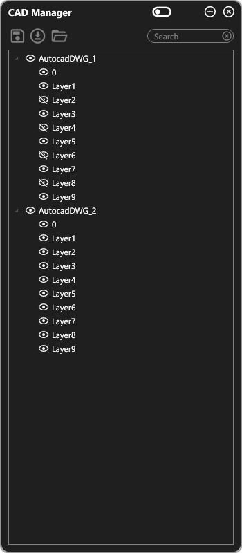
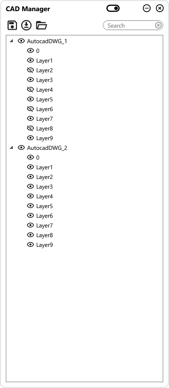

Revit plugins for electrical design and BIM coordination
RK Tools explores focused ways to reduce repetitive work in Autodesk Revit. The library covers CAD
visibility, electrical schematics, circuit routing, lighting coordination, cable selection, issue tracking,
and model conversion.
Each tool starts from a practical design problem: make the model easier to understand, keep project data
consistent, and give engineers clearer control over recurring tasks.
Capabilities are described here without public distribution links. Compatibility and release details are
handled separately for each tool.
CAD visibility and coordination
CAD Manager
CAD Manager is designed for Revit projects that depend on imported or linked DWG references. It brings
view-level and layer-level visibility decisions into one focused workflow, helping teams control CAD
context without repeatedly navigating standard visibility dialogs.
What it addresses
Large projects can accumulate many CAD files, layers, and view-specific exceptions. CAD Manager focuses
on making those decisions easier to review and maintain, including cases where view-template behavior
does not provide enough flexibility.
Workflow focus
Toggle DWG and layer visibility per view
Handle visibility needs beyond normal view templates
Retain project settings in a structured data store


Electrical circuit routing
CircuitPath
CircuitPath targets repetitive electrical circuit-path corrections in Revit. Its purpose is to apply a
consistent path mode across selected project content while keeping the operation predictable and easy to
reverse through Revit's normal undo workflow.
What it addresses
Circuit routing settings can become inconsistent when many devices and circuits are edited over time.
CircuitPath provides a focused project-wide action for standardizing the intended path behavior.
Workflow focus
Apply the “All Devices” circuit path mode
Support repeated runs without stacking unintended changes
Keep the operation compatible with normal undo
Security-system coverage
Camera FOV
Camera FOV translates camera sensor and lens information into visual coverage geometry. The goal is to
support CCTV planning directly in the Revit model, where designers can review coverage in both plan and
three-dimensional context.
What it addresses
Camera placement is easier to evaluate when technical specifications become visible design geometry.
The tool focuses on turning field-of-view calculations into model feedback that can be reviewed during
coordination.
Workflow focus
Calculate viewing cones from sensor specifications
Visualize coverage in 2D and 3D
Update geometry as parameters change
Design issue coordination
Jira Integration
Jira Integration connects model-review work with issue tracking. It is intended to reduce the context
switching involved in documenting a Revit issue, assigning it, and preserving a useful visual reference
for the wider project team.
What it addresses
Coordination issues often lose useful model context when they are recreated manually in another
system. A direct workflow helps keep issue descriptions, responsibility, and supporting images aligned
with the design task.
Workflow focus
Create and update Jira issues from the workflow
Synchronize priorities and assignees
Attach screenshots for clearer design context
Electrical documentation
Panel Schematics
Panel Schematics supports the creation and maintenance of electrical schematic content in Revit. It
organizes circuit or panel rows in a structured grid, then uses that information to place detail items and
keep electrical parameters aligned with the documented result.
What it addresses
Manual schematic assembly creates repeated placement and data-entry work. The tool focuses on a
repeatable flow from organized row data to Revit detail content, reducing inconsistency between the
model and the schematic view.
Workflow focus
Manage schematic rows in a DataGrid interface
Place Revit detail items from structured data
Synchronize relevant electrical parameters
Circuit documentation
Single Line Diagrams
Single Line Diagrams explores circuit-driven generation of electrical diagram content. It uses Revit
circuit information as the basis for placing diagram elements with consistent level awareness and
controllable spacing.
What it addresses
Single-line diagrams are structured but time-consuming to assemble manually. A circuit-led workflow
can reduce repeated placement work while maintaining a clearer relationship between model data and
documentation.
Workflow focus
Generate diagram content from circuit information
Account for project levels during placement
Apply consistent spacing controls
Lighting coordination
DIALux Import
DIALux Import supports the transfer of lighting-design information into a Revit workflow. It focuses on
interpreting linked model content, matching or creating required types, and organizing repeated lighting
elements such as LED strips.
What it addresses
Moving lighting-design results into BIM can involve substantial checking and repetitive type
management. This workflow aims to reduce manual reconstruction while keeping the resulting Revit
elements organized for coordination.
Workflow focus
Read relevant lighting content from linked models
Create missing Revit types when needed
Group LED strip elements intelligently
Model conversion
IFC to Revit
IFC to Revit investigates a controlled approach to converting external model content into native Revit
placements. The workflow centers on category and type mapping, batch processing, and predictable placement
based on source-object geometry.
What it addresses
Coordination models often contain useful objects that are difficult to reuse directly. A mapping-led
conversion workflow can make selected content more practical inside Revit without treating every
imported object as the same generic case.
Workflow focus
Map source categories and types to Revit content
Process multiple placements as a batch
Use bounding-box centers for consistent positioning
Cable selection and data
Cable Catalogue
Cable Catalogue provides a structured way to browse and select cable types. It combines rule-based
selection with filtering and sorting so designers can narrow a larger catalogue to the options relevant to
the current electrical-design task.
What it addresses
Cable data becomes difficult to navigate when naming, materials, and technical properties are spread
across a long undifferentiated list. The catalogue workflow makes selection criteria visible and
repeatable.
Workflow focus
Apply rules to cable-type selection
Filter and sort catalogue entries
Present the workflow in a focused Material Design interface